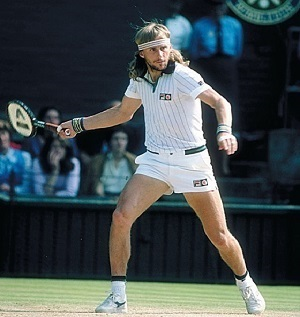
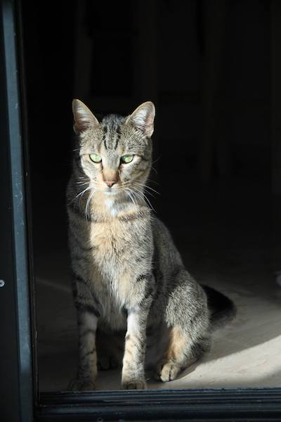
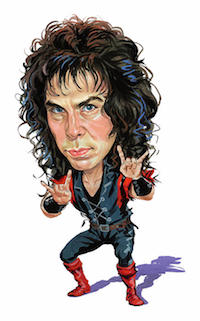
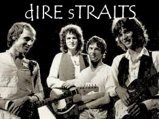
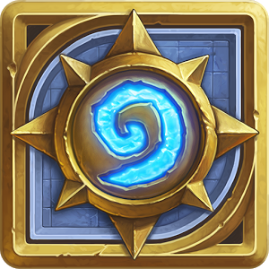
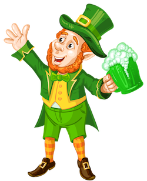
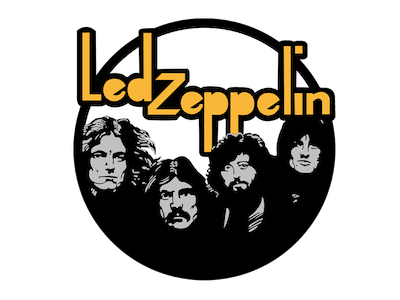
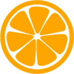
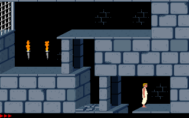
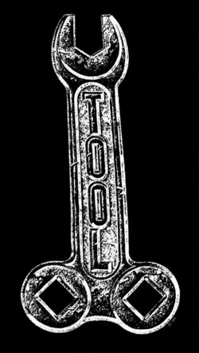
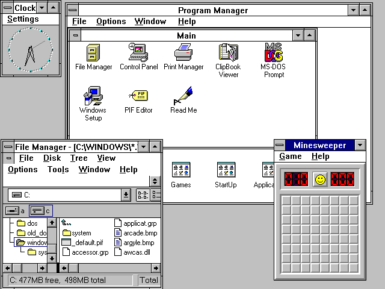
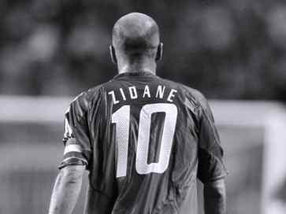
 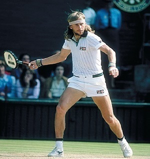
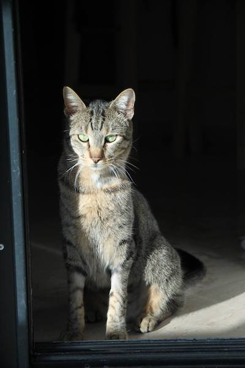
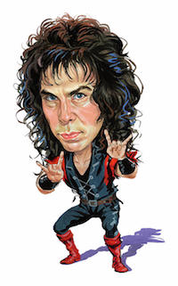
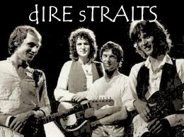
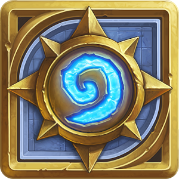
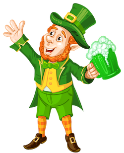
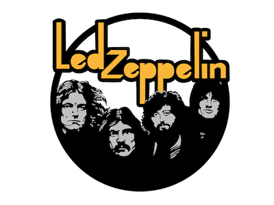
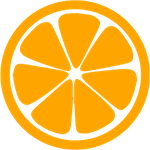
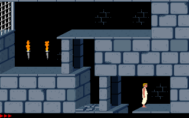
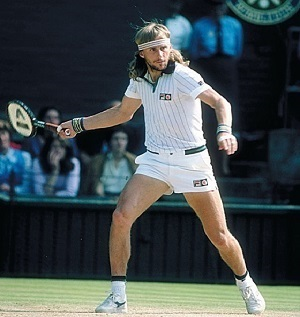
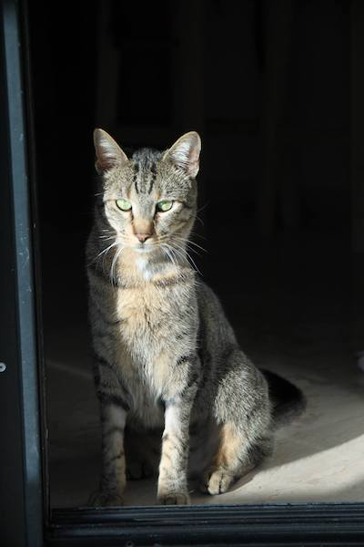
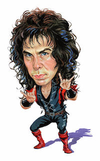
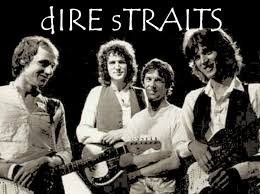
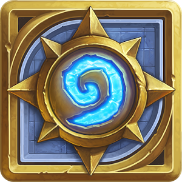
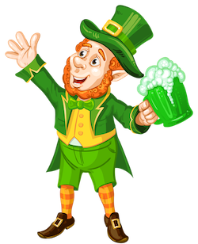
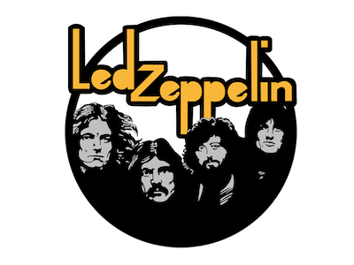
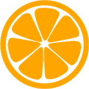
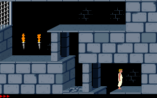


 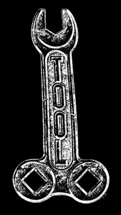
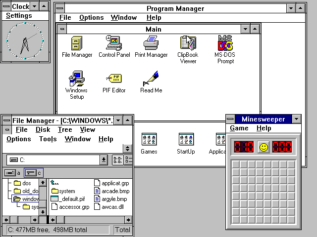
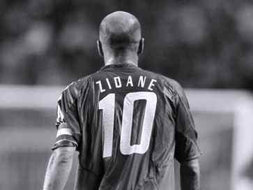
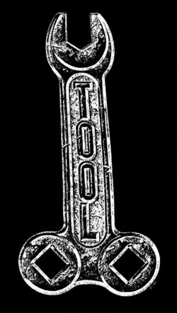
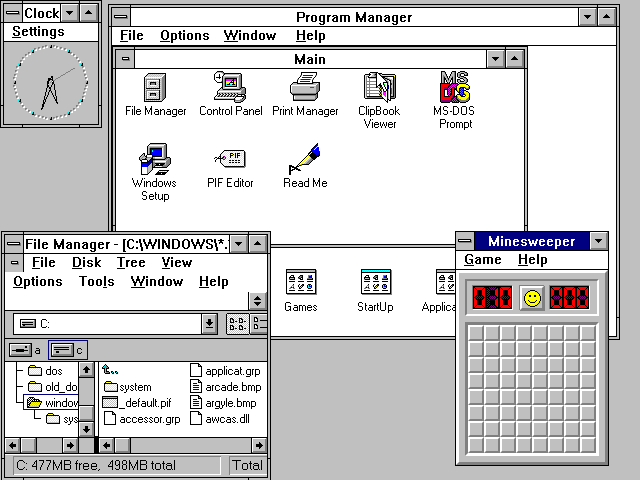
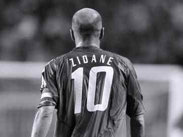
Home
Hi, My name's Paris, welcome to my website. You can mouse over the orange colored texts and see what happens.
I was born in Thessaloniki, on October 12, 1987. My dad's Greek and my mom's Dutch, so I've been raised bilingual.
I have a cat, his name is Kira.
My favourite bands are Led Zeppelin, Dio and Dire Straits. I'm a football fan, I support PAOK, and my favourite footballer of all time is Zinedine Zidane. I've also been playing Tennis since I was 7 years old, still a huge fan of Pete Sampras, and still can't decide whether Roger Federer or Bjorn Borg is the GOAT. -As of July 16 2017, it's Federer.-
I also like traveling, I've been to most European countries but I still haven't been to Sweden, Portugal and Ireland. I'd like to go there. I would aslo like to visit Argentina, Japan and Tanzania's national parks.
The first video game I ever played was Prince of Persia. I played that on my mom's first computer, running Windows 3.11. Nowadays, I mostly play Hearthstone and Counter Strike: Global Offensive.
In this website, you will find my CV, along with my personal blog (which might not be entirely in English), Programming-related content such as code snippets and/or projects, and Drum sheets (transcriptions) I write.
Curriculum Vitae
I graduated in 2012, from the Faculty of Informatics of the Aristotle University of Thessaloniki, and got my MSc. in Artificial Intelligence two years later, at the University of Amsterdam. My Master Thesis's title is "Towards Personalised Gaming via Facial Expression Recognition" and was accepted as a full paper at AIIDE 2014 and as a demo session at BNAIC 2014. Also, I won the Dutch Young Researcher Award for 2014.
Right now, I live and work in Tilburg as a Ph.D. candidate, for the Data2Game project.
Who I've worked with
Programming Languages I've used
- Javascript
- Java
- Python
- HTML
- CSS
- C++
- C
- Matlab
- Cordova/Phonegap
- JQuery/JQuery Mobile
- Node.js
- OpenCV
- JavaFX
- WEKA
- Apache Hadoop
- Handlebars.js
- Highcharts.js
- Express.js
- N3.js
- rdflib.js
- PyQt v4
- Bootstrap
Blog
January 14, 2018
Κουφάλα Δημιουργέ...
Programming
I created this website within a few hours. If you liked it, you can download the source code by pressing the button below. Or you can just right click anywhere here and "View page source". I will try to keep this section updated with nerd stuff.
I liked my friend George's website so props to him. Check it out, he's doing some interesting stuff for his PhD.
Drums
I've been playing the drums since October 2016, and I really enjoy it. I hope I can play a full Tool song at some point. For the time being, I play some AC/DC songs which I find to be quite easier.
In this section, I will publish drum transcriptions that I write on my own. Of course, I review them with my teacher but beware, they're not perfect. Anyway, I do this beacause I found it hard to find free drum sheet music on the Internet, and I really believe there should be more. Also, trying to write drum transcriptions is a good form of exercise!
Here's my teacher's soundcloud, go take a look. I really admire his knowledge on rock music.
I would like to share some youtube channels I've been following since (or even before) I started playing drums. Those guys have been an inspiration to me, and I strongly recommend you check out their content. Here are some of my favorite videos:
To write my transcriptions, I used Musescore 2.0. It's free and it's easy to use.
My drum transcriptions
- AC/DC - "Let me put my love into you" Drum Sheet
- Boston - "More than a feeling" Drum Sheet
- Led Zeppelin - "Communication Breakdown" Drum Sheet
- Mad Season - "Artificial Red" Drum Sheet
- Τρύπες - "Ταξιδιάρα Ψυχή" Drum Sheet